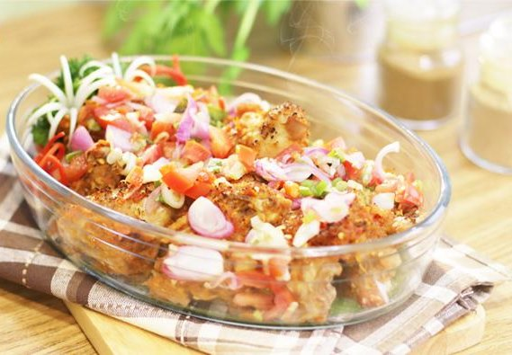
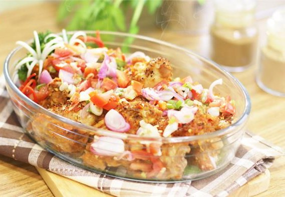

Maknyuzz

 

ikan bubara
ikan bubara ini adalah makanan yang sering dicari oleh wisatawan yang berkunjung ke Raja Ampat. Selain cita rasa yang enak, Ikan Bubara ini memiliki daging yang sangat lebut dan tebal.
Ulat Sagu
Makanan ini juga merupakan makanan khas dari Raja Ampat. Ulat Sagu ini memiliki protein tersendiri bagi tubuh kita.